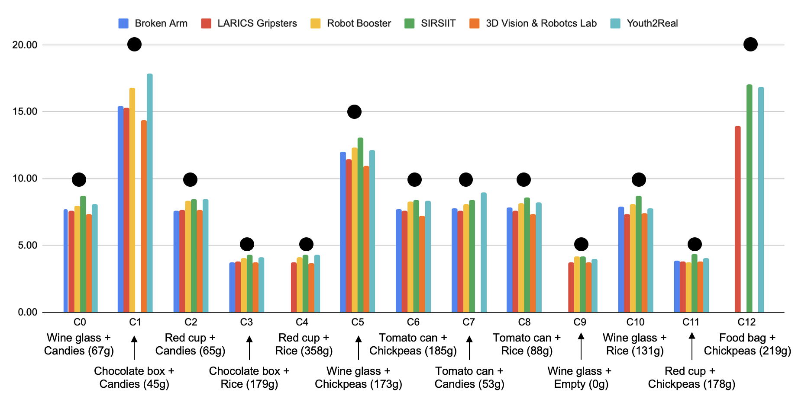
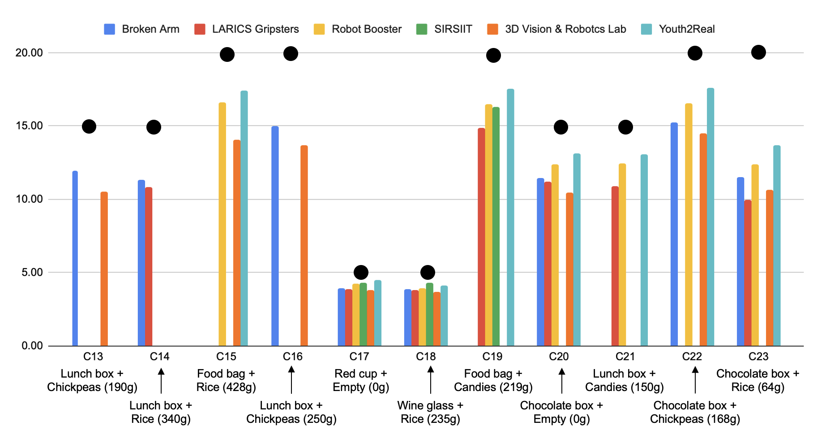

Notes on results and scoring:
- Teams AIRLab and Shakey’s Legacy had technical issues and could complete only a few configurations. Not listed in this leaderboard.
- Team Youth2Real successfully completed 21 out of 24 handover configurations; Robot Booster and LARICS Gripsters: 20 out of 24; Broken Arm: 18 out of 24; 3D Vision & Robotics Lab: 19 out of 14; and SIRSIIT: 15 out of 24.
Filled black circle denotes the configuration weight.


Teams are ranked by the benchmark score.
The offline score s9 (human intention/hand pose prediction) has not been considered for the ranking as it is not a requirment for the qualification phase, but it is still computed and reported for reference and future comparisons. The maximum benchmark score is 88.89. The maximum score for the robotic subsystem is 66.67.
We provide the scores obtained by the CORSMAL baseline (see article in IEEE Robotics and Automation Letters, 2020) only for references, as the computation of various scores has been revised and updated for the qualification.
Benchmark scoresResults are also grouped by vision subsystem, robotic subsystem, and completion of the overall task.
Notes on results and scoring:
- SIRSIIT and AIRLab (returning teams from previous years) submitted results only for the task scores (s10, s11, s12, s13).
- Robot Booster uses prior information of the content density to compute the mass of the containers and content.
- 3D Vision & Robotics Lab use a rule-based approach for vision-based mass estimation based on prior knowledge of the physical properties of the cups (empty-container weight, and container height). We provide a second entry that does not account for the mass estiimation.
- IITGN Robotics Lab completed only 216 configurations: the target delivery location was set for each configuration, but the score is computed with respect to a fixed one due to missing reporting. Timings were not correctly reported.
- All teams but SIRSIIT use alternative cups and scores are relative to the measurements provided by the used cups.
- Broken Arm, LARICS Gripsters, Robot Booster, Shakey's Legacy, 3D Vision & Robotics Lab, IITGN Robotics Lab, and Youth2Real provided results for end-effector reachability (score s8)
- s2: score for vision-based estimation of the container width at the bottom (mm)
- s3: score for vision-based estimation of the container height (mm)
- s4: score for vision-based estimation of the container mass (container + filling)
- s5: score for vision-based estimation of the container fullness (%)
- s6: score for robot-based estimation of the container mass (container + filling)
- s7: offline score for robot-based estimation of the human intention or human hand pose trajectory (not computed)
- s8: offline score for robot-based estimation of end-effector reachability
- s9: score for delivery location accuracy
- s10: score for final mass estimation (container + filling) to assess spilling
- s11: score for the human maneuvring time
- s12: score for the handover time
- s13: score for the robot maneuvring time
- C2: Cup 2
- C3: Cup 3
- C4: Cup 4
- G1: Grasp 1
- G2: Grasp 2
- G3: Grasp 3
- HO-L: handover left location
- HO-C: handover centre location
- HO-R: handover right location